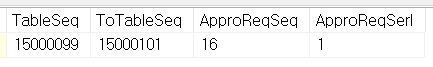
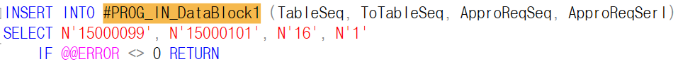
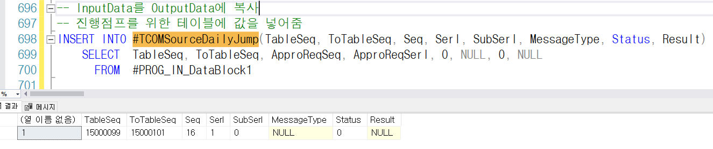
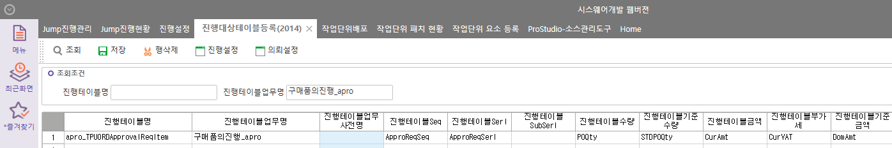

진행 단계 (SP)
- 테이블 : #PROG_IN_DataBlock1


- 태이블 : #TCOMSourceDailyJump (1 -> 2)

_SWCOMSourceDailyJumpQuery
-
확정 사용하는 경우 확정 되었는지 체크
- 환경설정 미체크시 (프로젝트) 구매요청 -> 구매견적의뢰 JUMP시 확정체크하지 않도록 추가
-
#SCOMSourceDailyJumpQuery 데이터 넣기'
- _TCOMProgTable 에서 @FromTableSeq를 통해 해당 실테이블 값을 넣는다'

-
_TCOMProgRelativeTables 에서 @FromTableSeq, @ToTableSeq 에 맞는 관계 데이터 가져옴
-
최종적으로 #TCOMSourceDailyJumpQueryResult 테이블에 넣음
진행 조회 SP (ex. apro_SWPUORDApprovalReqJumpQuery)
- #BIZ_OUT_DataBlock1 에 INSERT
진행 체크 SP (ex. _SWPUORDApprovalReqJumpCheck)
- #BIZ_OUT_DataBlock1 로 체크 (저장 체크 sp 와 비슷하다)